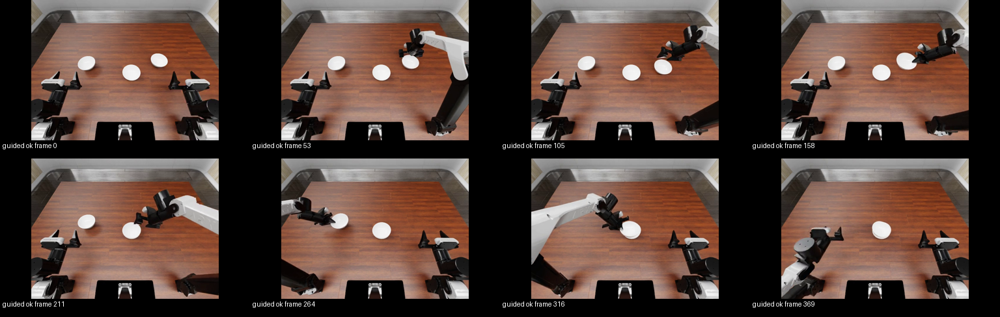

RoboDojo 引导模仿
第一个正面结果：加入 System 2 引导轨迹训练的 Diffusion Policy，留出布局成功率 4.2% → 15.0%（p = 0.002）
模仿的意义（新）：从零训练 Diffusion Policy，只用 pi0 自己的 58 个成功回合时，在没见过的布局上成功 5/120（4.2%）；加入 84 个 System 2 引导出的成功回合后成功 18/120（15.0%），成对比较 15 比 2，p = 0.0023。对照显示两种数据单独都只有约 4%（58 个引导回合 4/120，84 个引导回合 4/120），合起来 15%：System 2 的数据与 System 1 自己的成功回合互补。“142 个原生回合”的等总量对照正在收集数据。
模仿后更少需要 System 2（新）：同样有 System 2 帮助时，模仿了 System 2 数据的 DP 学生接管次数少 12%（p = 0.046）、教师步数少 17%（p = 0.004），系统成功 23/100 对 14/100。
成立：System 2 在 pi0 快失败时接管，能把原本失败的回合救回来（成对 4/16 对 0/16；330 个引导回合成功率 25.5%，原生 17.8%）。
pi0 微调仍未提升：pi0 能学会纠错（留出纠错误差 0.100 → 0.070），但正常动作同时被带偏，闭环成功率都不高于原版；单因素扫描显示原生数据的防遗忘占比是主要杠杆，平滑无影响。流场锚定 + 更大原生锚定集（e2）把损失缩小到接近持平（11/96 对 13/96，p = 0.81），但仍没有提升。
从零训练的 Diffusion Policy：加入 System 2 引导轨迹后，留出布局成功率 4.2% → 15.0%（p = 0.002）
同一套 Diffusion Policy（三路相机 + 关节状态，16 步动作、执行 8 步重规划，各 6 万步、各 4 张卡），只改训练数据，在从未训练过的 set2 布局 40–54上评测；两种策略在同一布局、同一采样种子（6100–6107）上成对运行，共 240 回合全部有效。
| 策略 | 训练数据 | 成功 | 95% 区间 |
|---|---|---|---|
| dpN | 58 个原生成功回合（pi0 自己做成的） | 5 / 120（4.2%） | 1.8–9.4% |
| dpG | 同样 58 个原生回合 + 84 个 System 2 引导成功回合（接管前 50 步的“快失败”动作和失败的教师段不作为训练样本） | 18 / 120（15.0%） | 9.7–22.5% |
为什么引导数据有用：它把 System 1 做不到的情况变成了成功示范
| 训练布局（共 110 个） | 原生（pi0 自己） | System 2 引导 |
|---|---|---|
| 成功回合 | 58（来自 338 个原生回合） | 84（来自 330 个引导回合） |
| 有成功示范的布局 | 44 | 60 |
| 其中 pi0 从未独立成功的布局 | 0（按定义） | 33 个布局、43 个回合 |
原生成功只出现在 pi0 本来就能做好的布局上；System 2 在 pi0 快失败时接管，把其中 33 个“pi0 从来做不成”的布局变成了成功示范，有成功示范的布局从 44 个增加到 77 个。
同分布检验：见过的布局上差别不大
| 训练布局 set0/set1 0–29 × 新种子 6200（60 个起点，同起点成对） | 成功 | 对照 |
|---|---|---|
| 原版 pi0 | 9 / 60 | — |
| HGD（pi0 模仿纠错段） | 10 / 60 | vs 原版 p = 1.0 |
| dpN（只用原生） | 14 / 60 | — |
| dpG（加入引导） | 17 / 60 | vs dpN p = 0.66；vs 原版 17 比 9，p = 0.077 |
在见过的布局上，只用原生数据的 DP 已有 23%，加入引导数据只多 5 个百分点（不显著）；在没见过的布局上从 4% 提高到 15%（p = 0.002）。和覆盖数据一致：引导数据的价值主要在于让策略见过更多“难”的情况，从而在新布局上更稳。
模仿后更少需要 System 2（引导模式：学生 + 同一个 System 2）
| set2 留出布局 40–54，成对 | 系统成功 | 每回合接管次数 | 每回合教师步数 |
|---|---|---|---|
| 原版 pi0 + System 2（59 对） | 14 / 59 | 1.98 | 291 |
| HGD（pi0 模仿纠错段）+ System 2 | 12 / 59（p = 0.79） | 2.02（p = 1.0） | 306（p = 0.89） |
| dpN（DP，只用原生）+ System 2（100 对，种子 6100–6107） | 14 / 100 | 2.08 | 358 |
| dpG（DP，加入引导数据）+ System 2 | 23 / 100（p = 0.14） | 1.82，−12%（41 对更少、24 对更多，p = 0.046） | 298，−17%（63 对更少、34 对更多，p = 0.004） |
种子 6104–6107 那一半有 8 个回合因共享存储余量不足在启动阶段失败、触发熔断又停掉 15 个；丢失的起点在两种学生之间对称，按规则不补跑、不计入。另：原版 pi0 + System 2 在留出布局上也达到 24%（原版单独约 15%）。
数据来源对照：两种数据单独都不行，合起来才行
| DP 从零训练（同一批 120 个留出起点） | 训练数据 | 成功 | 对照 |
|---|---|---|---|
| dpN | 58 个原生成功回合 | 5 / 120 | — |
| dpGs | 58 个引导成功回合（与 dpN 回合数相同） | 4 / 120 | vs dpN p = 1.0 |
| dpGo | 84 个引导成功回合 | 4 / 120 | vs dpN p = 1.0 |
| dpG | 58 个原生 + 84 个引导 | 18 / 120 | vs dpN p = 0.0023；vs dpGo 16 比 2，p = 0.0013 |
只用引导数据并不比只用原生数据好（同回合数 4 比 5），所以 System 2 的数据不是“单独更好”；但把它加到原生数据上，成功率从 4% 到 15%，远超两者相加。也不是单纯数据越多越好：84 个引导回合比 58 个原生回合多，却没有更好。合理的解释是两者互补：原生回合提供 pi0 自己风格的、从头到尾完整一致的正常流程；引导回合提供 pi0 做不到的 33 个布局上的成功经验和纠错动作；单独的引导回合里学生和教师两种动作风格混在一起，难以单独学好。
训练种子重复：方向一致，幅度随训练随机性变化
| 同一批留出起点 | 只用原生 | 原生 + 引导 | 仅原生 / 仅加引导成功 | p |
|---|---|---|---|---|
| 训练种子 0（上表） | 5 / 120 | 18 / 120 | 2 / 15 | 0.0023 |
| 训练种子 1（重新训练两者） | 4 / 119 | 8 / 119 | 3 / 7 | 0.34 |
| 两个训练种子合并 | 9 / 239 | 26 / 239 | 5 / 22 | 0.0015 |
换一个训练种子，加入引导数据仍然更好，但提升从 +10.8 个百分点降到 +3.4 个百分点，说明从零训练的 DP 本身波动较大，单个训练种子的数字不能当精确效应量。合并检验把两个种子的同一起点当作两对，属近似。
更多 System 2 数据：再加入失败引导回合中已完成的纠错段（约 5 倍纠错数据）
| 同一批 120 个留出起点 | 训练数据 | 成功 | 对照 |
|---|---|---|---|
| dpGF | 58 原生 + 84 引导成功 + 失败回合中已完成的纠错段 | 16 / 119 | vs dpN 13 比 2，p = 0.0074；vs dpG（18/120）p = 0.83 |
| dpGFo | 84 引导成功 + 失败回合纠错段（不含原生） | 10 / 120 | vs dpGo（4/120）p = 0.15 |
dpGF 是独立训练、数据组成不同的另一个模型，再次显著好于只用原生（p = 0.007），“原生 + System 2 数据”的结论又得到一次独立复现；但 5 倍纠错段相对 dpG 没有额外收益。不含原生时，更多 System 2 数据有一定帮助（4 → 10），仍不如与原生组合。
最后一个待排除的解释：dpG 共 142 个回合。正在补收原生回合（训练布局、新种子，3 × 160 回合），训练“142 个原生回合”的 dpNb 与 dpG 比较；同时训练“全部原生 + 84 个引导”。另有训练种子重复（dpN2 vs dpG2）和加入失败回合纠错段（约 5 倍纠错数据）的 DP 正在训练。dpN / dpG 逐回合记录。
引导轨迹在哪些任务上、每个任务多少条
目前只有一个任务：stack_bowls（标准布局，三只碗叠成一摞）。引导成功的轨迹共 84 条，全部来自训练布局；它们就是模仿学习用的数据。
| 任务 | 布局集 | 布局数 | 策略种子 | 引导回合 | 引导成功（轨迹条数） |
|---|---|---|---|---|---|
| stack_bowls（标准） | set0（训练） | 55 | 2000 / 2001 / 2002 | 165 | 41 |
| set1（训练） | 55 | 2000 / 2001 / 2002 | 165 | 43 | |
| 合计 | 110 | — | 330 | 84（种子 2000/2001/2002：28 / 29 / 27） |
| 每个布局 3 次引导中成功几次 | 0 次 | 1 次 | 2 次 | 3 次 |
|---|---|---|---|---|
| 布局个数（共 110） | 50 | 39 | 18 | 3 |
| 84 条成功轨迹的组成 | 数值 |
|---|---|
| 平均长度（控制步） | 584 |
| 其中学生 pi0 控制 / System 2 控制（平均） | 433 / 151（教师占 24%） |
| 有教师接管的成功轨迹 | 82 / 84 |
| 转成的训练样本（每 10 步一个 + 学生每个动作块开头） | 5,076 |
没有用到的：stack_bowls_random（随机布局，强视觉干扰，原版 pi0 原生 0/40，没有可救的基础）以及 RoboDojo 其他任务（还没有搭对应的 System 2 技能）。set2 布局全部留作评测，从未进入收集或训练。
本页用到的词
- System 1 / 学生
- RoboDojo 官方 pi0 checkpoint（arx_x5 双臂、三路相机、14 维关节动作），只看图像、关节状态和指令。
- System 2 / 教师
- 这一版是特权脚本教师：读仿真真值位姿，用有界逆运动学（每步 ≤ 1 cm、≤ 0.05 rad）执行。不是 Astra；之后用 Astra 替换“何时接管、做什么”。
- 原生（native）
- 只有 pi0 自己跑，没有 System 2。
- 引导（guided）
- pi0 跑；System 2 判断快失败时接管一段，做完交还 pi0，pi0 按当前画面重新规划。每回合最多接管 4 次、教师最多 500 步。
- 纯脚本（script）
- 教师从复位开始独立完成全程，用来检验教师技能本身。
- 触发：掉落 / 抓空 / 倾倒
- 夹着的碗比抬起后的最高点低 2 cm 以上 / 夹爪闭合 15 步碗没升高 1 cm / 碗倾斜超过 45° 且持续 20 步。
- 触发：停滞 / 第 550 步 / 未复位 / 重试
- 200 步内没有碗移动超过 1 cm / 到第 550 步仍未完成 / 三碗已叠好 30 步但双臂没回原位 / 教师技能失败后 30 步换另一只手臂再试。
- 接管动作
- 把一只不在碗堆里的碗搬到碗堆最上面（没有碗堆时搬到最靠中间的碗上），抓取和叠放的相对位姿取自 58 个原生成功回合；或者双臂回到初始位置。
- 成功
- RoboDojo 官方判定：三只碗都直立、在 4 cm 内叠成一摞、双臂回到初始位置附近，且在 800 个控制步内完成。
- N50
- pi0 每次输出 50 步动作并全部执行，然后才看新画面重新规划；被接管时剩下的动作作废。
- 布局 set0 / set1 / set2、策略种子
- 布局决定三只碗的初始摆放（每个集合 55 个）；策略种子决定 pi0 采样噪声。set0、set1 用于收集和训练，set2 只用于评测。
- 成对比较 / 精确 McNemar
- 同一布局、同一策略种子分别跑两种条件；只看“一边成功一边失败”的起点数，检验差异是否显著。
- 动作误差（L1）
- 给定同一时刻的图像和状态，让模型采样 4 次动作块，与目标动作块逐元素相减取绝对值的平均（手臂关节，单位弧度，看 50 步整块）。不跑仿真，只看模型“会不会做这个动作”。
- 原生漂移
- 在原版自己跑过的留出画面上，以原版自己当时的动作为目标测 L1。原版自己的误差（0.035）就是采样噪声的底线；微调后超出底线越多，说明正常行为被带偏越多。
- Diffusion Policy（DP）
- 扩散策略：从零训练（不用预训练权重），输入前后两帧三路相机（缩到 120×160）和关节状态，输出 16 步关节动作，执行前 8 步后看新画面重新规划。与 pi0 不同，它没有“原有行为”可被带偏，用来检验引导数据本身有没有用。
- 样本 / 处理
- 一个样本 = 当时学生看到的三路图像和关节状态 + 之后实际执行的 50 步指令（学生和教师都在内）；教师段的手臂关节做 5 步滑动平均，夹爪不变。
System 2 能把原本失败的回合救回来
| 试跑 p5（训练布局） | 回合 | 成功 | 说明 |
|---|---|---|---|
| 原生：16 个“原生两次都失败”的布局 | 16 | 0 | 同起点、同策略种子 1100–1115 |
| 引导：同样 16 个起点 | 16 | 4 | 成对：只有引导成功 4 个，只有原生成功 0 个 |
| 纯脚本：教师从复位独立完成 | 6 | 3 | 检验教师技能 |

视频为头部相机、按仿真时间播放；腕部相机录像未上传。
大样本引导收集（330 回合）
| 指标 | 数值 |
|---|---|
| 引导回合（110 个训练布局 × 种子 2000/2001/2002） | 330，执行错误 0 |
| 引导成功 | 84（25.5%） |
| 同批训练布局的原生成功（两轮原生筛查，种子 0–3） | 57 / 320（17.8%） |
| 有接管的回合 / 其中成功 | 328 / 82 |
| 触发次数：第 550 步 / 停滞 / 重试 / 抓空 / 倾倒 / 未复位 / 掉落 | 163 / 111 / 136 / 60 / 58 / 36 / 10 |
| 教师技能失败：抓起时碗没跟上 / 接近 / 搬运 / 下降 / 放置 / 没有可搬的碗 | 53 / 50 / 38 / 23 / 8 / 20 |
收集和原生筛查用的策略种子不同，所以 25.5% 对 17.8% 不是成对比较；成对的救回证据见证据一。几乎每个回合都会触发接管，其中一部分打断了本可成功的学生动作。
两种配方都没有让 pi0 独立运行的成功率提升
| 配方 | 训练数据 | 评测（set2 布局 40–54，成对） | 原版 | 模仿后 | 只有模仿后成功 / 只有原版成功 | 精确 McNemar | 判定 |
|---|---|---|---|---|---|---|---|
| GIL：整条引导轨迹 | 84 回合 → 5,076 样本；lr 2.5e-5，2,000 步 | 种子 6000–6007，120 对 | 19（15.8%） | 1（0.8%） | 1 / 19 | p = 4×10⁻⁵ | 显著变差 |
| HGD：只学教师纠错段 + 原生成功回放 | 1,111 个教师纠错样本（剔除以技能失败告终的段）+ 原生成功回合，共 1,767 样本；lr 1e-5，1,104 步 | 新种子 6008–6015，120 对 | 18（15.0%） | 12（10.0%） | 7 / 13 | p = 0.26 | 无提升（方向偏负） |
下一步可选方向
- 让 System 2 的纠错更像 pi0 自己的动作：例如接管时只给目标（把哪只碗放到哪里），由 pi0 自身或一个按 pi0 风格训练的低层去执行；或用 Astra 做决策，执行仍由 VLA 完成。
- 多收纠错数据：目前只有约 1,100 个纠错样本；再收 2–3 倍，并提高教师成功率（现在约 40% 的接管以技能失败告终）。
- 只在“快失败”的状态上用纠错：训练时按状态加权，避免改动 pi0 在正常状态下的行为。
修正配方是在看过第一版的失败回合之后定的，属于开发阶段修正。判定规则事先写入协议：模仿后 > 原版且 p < 0.05 记为“初步有效”。
pi0 学会了纠错，但正常动作也被带偏；同时用 Diffusion Policy 从零再试
不跑仿真，直接比较模型输出的动作和目标动作（同一批样本、同一套打分，原版 / 整条轨迹模仿 GIL / 只学纠错段 HGD 三个 checkpoint）。
| 50 步手臂动作误差（L1，弧度） | 教师纠错段（训练用到的，160 个） | 教师纠错段（留出，未参与训练，49 个） | 原生成功回合（训练布局，120 个） | 原生漂移（留出画面，120 个） |
|---|---|---|---|---|
| 原版 pi0 | 0.140 | 0.100 | 0.045 | 0.035（噪声底线） |
| GIL（整条引导轨迹） | 0.060 | 0.068 | 0.071 | 0.057（+63%） |
| HGD（纠错段 + 原生回放） | 0.066 | 0.070 | 0.059 | 0.057（+63%） |
| 每步指令的平滑度（引导成功回合，c1 + c2） | 教师控制的步（8,610） | 学生控制的步（24,075） |
|---|---|---|
| 每步关节最大变化（中位数 / 90 分位，弧度） | 0.022 / 0.044 | 0.015 / 0.054 |
| 抖动（三阶差分，90 分位） | 0.025 | 0.015 |
| 静止的步占比 | 29% | 0% |
教师动作“走走停停”：移动时比学生快，但有 29% 的步完全不动（等夹爪闭合、到位后停顿），起停处更突兀。pi0 自己从不完全停下。这种风格差异可能是 pi0 学纠错时连带改变正常动作的原因之一。
pi0 单因素扫描：数据量、平滑、训练参数（离线结果）
以 HGD 为中心，每次只改一个因素；同一批样本、同一套打分。目标是“留出纠错误差降下来，同时原生漂移不超过 0.040”。
| 变体（只改这一项） | 步数 | 留出纠错误差 ↓（原版 0.100） | 原生漂移 ↓（底线 0.035） | 原生成功回合误差 ↓（原版 0.045） |
|---|---|---|---|---|
| HGD（参照：5 步平滑、全部数据、回放 ×1、20 轮、lr 1e-5） | 1,104 | 0.070 | 0.057 | 0.059 |
| 参数：只训 5 轮 | 276 | 0.082 | 0.064 | 0.071 |
| 参数：学习率 2.5e-6 | 1,104 | 0.081 | 0.062 | 0.068 |
| 平滑：教师段不平滑 | 1,104 | 0.071 | 0.059 | 0.059 |
| 平滑：9 步平滑 + 长停顿压到 ≤ 10 步 | 1,104 | 0.071 | 0.058 | 0.059 |
| 数据量：只用一半引导回合 | 747 | 0.081 | 0.052 | 0.052 |
| 防遗忘：原生回放 ×3 | 1,104 | 0.081 | 0.050 | 0.046 |
- 平滑不是原因：不平滑、5 步平滑、9 步平滑加压缩停顿，三者几乎一样。
- 不是练过头：少训（5 轮）或调低学习率，漂移反而更大、纠错学得更少。漂移在训练一开始就发生（教师样本的损失是原生的约 10 倍），之后靠原生样本慢慢拉回。
- 真正的杠杆是“防遗忘”的原生数据占比：回放 ×3 时漂移最小、原生成功回合上与原版持平（0.046 对 0.045），纠错仍学到一部分（0.100 → 0.081）。但六个变体都没达到 0.040 的门槛。
失败类型：System 2 擅长纠正的失败是否变少（离线重放）
把 System 2 的检测器套到已完成的成对评测的真值轨迹上，统计每类事件发生过的回合数（原版 → 模仿后，set2 留出布局）。
| 配方 | 成对数 | 结束时仍有碗倒着 | 停滞（200 步无进展） | 抓空 | 掉落 | 成功 |
|---|---|---|---|---|---|---|
| HGD（System 2 纠错段 + 回放） | 120 | 18 → 11（p = 0.23） | 65 → 76 | 30 → 42 | 7 → 8 | 18 → 12 |
| GIL（整条引导轨迹） | 120 | 20 → 22 | 60 → 101（p < 0.001） | 26 → 34 | 1 → 10（p = 0.004） | 19 → 1 |
| 对照：自我模仿 SI-1f（只学自己的成功） | 111 | 20 → 9（p = 0.06） | 58 → 70 | 22 → 27 | 1 → 3 | 15 → 15 |
“碗不再被碰倒”在 HGD 上有迹象（18 → 11），但不显著，而且自我模仿对照也有同样变化，所以不能归功于 System 2。所有微调版本的共同副作用是停滞变多，和离线看到的“正常动作被带偏”一致：小数据微调让 pi0 变得犹豫。
纠错数据量：把失败引导回合里已完成的纠错段也用上（约 4 倍）
330 个引导回合中失败的 246 个共有 79,676 个教师控制步（成功回合 12,668 个）；它们的 10 步图像存档已清除，改用官方视频对应帧（第 i 帧 = 第 i 步控制前观测，平均差 1.5 灰度级），只取 50 步目标完全落在已完成纠错段内的样本，得到 4,463 个纠错样本（原来 1,111 个）。在流场锚定 λ = 10、原生 : 教师 = 3:1 的配方下：留出纠错误差 0.096（4,416 步时 0.097），漂移 0.038。锚定把正常行为保住了，但几乎没学到纠错；纠错数据加到 4 倍也没有打破这个取舍。
流场锚定 + 更大的原生锚定集：第一个通过离线门槛的 pi0 配方，闭环接近持平但仍无提升
按 Codex 代理调研的 CLEAR 方法（在原生画面上让微调后的动作场贴近原版），加上原生成功回合与原生失败回合前 300 步作为锚定集、训练步数加倍（2,208 步）。三个变体都通过门槛（漂移 ≤ 0.040 且留出纠错误差 < 0.090），按规则选 e2（λ = 3）：留出纠错误差 0.084，漂移 0.038。
| pi0 模仿配方（set2 留出布局，与原版成对） | 对数 | 原版 | 模仿后 | 只有模仿后 / 只有原版成功 | p |
|---|---|---|---|---|---|
| HGD | 120 | 18 | 12 | 7 / 13 | 0.26 |
| 原生回放 ×3（s6） | 72 | 15 | 7 | 5 / 13 | 0.096 |
| 流场锚定 e2 | 96 | 13 | 11 | 8 / 10 | 0.81 |
损失从 −6 / −11 个百分点缩小到 −2 个百分点（接近持平），说明锚定基本保住了原有行为；但纠错带来的收益仍不足以超过原版。对 pi0 来说，“保住正常行为”和“学会纠错”在现有数据规模下仍难兼得；纠错数据加到约 4 倍也没有改善离线纠错。
接下来三项检验（已提交）：(1) DP 从零训练、只用原生数据 vs 加入引导数据，在留出布局上成对评测，并有同回合数的“只用引导数据”对照；(2) 训练布局（见过的场景、新种子）上的同分布检验：原版 / HGD / DP 两臂同起点；(3) 引导模式下，模仿后的学生是否更少需要 System 2（接管次数、教师步数）。另有流场锚定配方（a1–a3）和更高原生占比（s7–s9）的离线结果待出。
正在验证（结果出来后更新本节）
- Diffusion Policy 从零训练：dpN 只用 58 个原生成功回合；dpG 用同样 58 个原生回合 + 84 个引导成功回合（接管前 50 步的学生动作和失败的教师段不作为训练起点）。两者架构、步数相同（各 6 万步），在 set2 布局 40–54 上同起点同种子成对评测。数据管线已检查：视频第 i 帧与第 i 步的策略输入逐像素对齐（平均差 1.5 灰度级，错开一帧为 2–6，错配相机为 50 以上）。
之前的结论哪些作废了
- 原版 pi0 在 stack_bowls 标准布局上的原生成功率稳定在 13–20%（约 600 个原生回合）；随机布局 0/40。
- 环境的 success 标志在回合中途恒为 True，只有终止时的值是官方判定，触发不能依赖它。
- 示范里每只碗的第一次松手常是中途挪碗，叠放位姿只取真正叠好的那次（叠放高度中位数 2.6 cm）。
逐回合记录
- 引导收集 330 回合：布局、种子、是否成功、控制步数、教师步数、每次触发（类型和控制步）、教师计划（搬哪只碗、放到哪只、用哪只手臂）、技能失败的阶段和原因。
- 试跑 p5 的 38 回合：6 个纯脚本 + 16 对引导/原生。
规则在数据产生前写入实验协议；本页不含服务器名和内部路径。